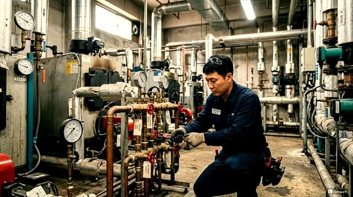
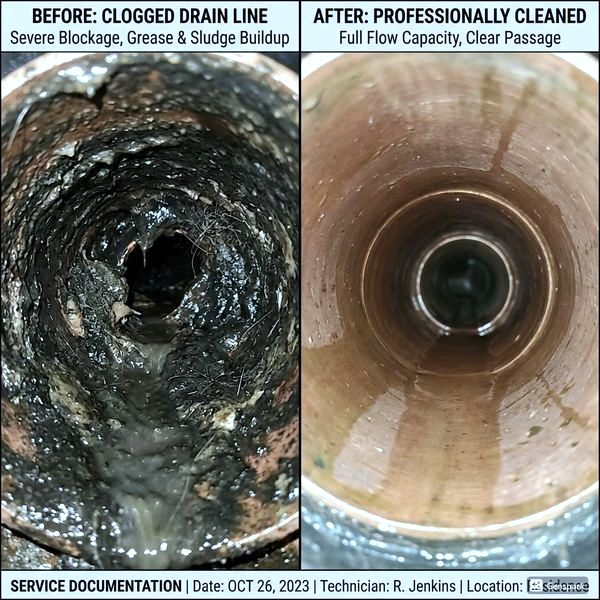
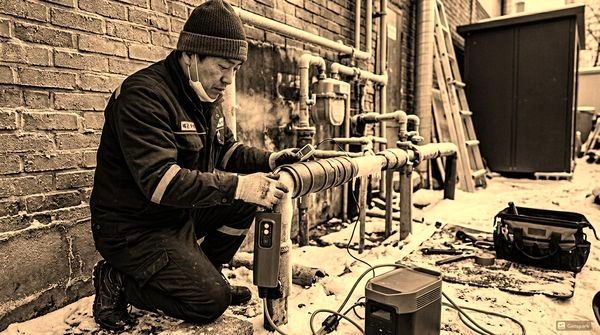

어린이집·유치원 배수 관리 위생 가이드
2026년 4월 12일 | 제우스시설관리
어린이집과 유치원은 영유아의 건강과 직결되는 시설입니다. 배수구 악취, 해충, 역류 등은 아이들의 건강에 직접적인 영향을 미칩니다. 정기적인 배수 관리와 위생 점검은 선택이 아닌 필수입니다.

영유아 시설에서 가장 주의해야 할 것은 하수구 악취와 나방파리입니다. 악취는 트랩 봉수 파괴나 배관 내부 오물 축적이 원인이며, 나방파리는 배관 내 유기물에서 번식합니다. 아이들은 면역력이 약해 세균이나 곰팡이에 의한 감염 위험이 높습니다.
권장 관리 주기는 분기별 1회 전문 배관 세척입니다. 고압세척기로 배관 내부를 깨끗하게 세척하고, 내시경 카메라로 배관 상태를 확인합니다. 세척 후 사진 리포트를 제공하여 위생 관리 기록으로 활용할 수 있습니다.

일상 관리 팁: 매일 퇴근 전 모든 배수구에 물을 흘려 트랩 봉수를 유지하세요. 주 1회 끓는 물을 각 배수구에 부어 기름때를 예방하세요. 배수구 거름망은 매일 청소하고, 식판 세척 시 음식물이 배수구로 직접 들어가지 않도록 주의하세요.

제우스시설관리는 영유아 시설 전용 정기관리 프로그램을 운영합니다. 안전한 환경에서 아이들이 건강하게 생활할 수 있도록 배관 위생을 책임집니다. 28분 내 긴급출동, 전화: 010-4406-1788